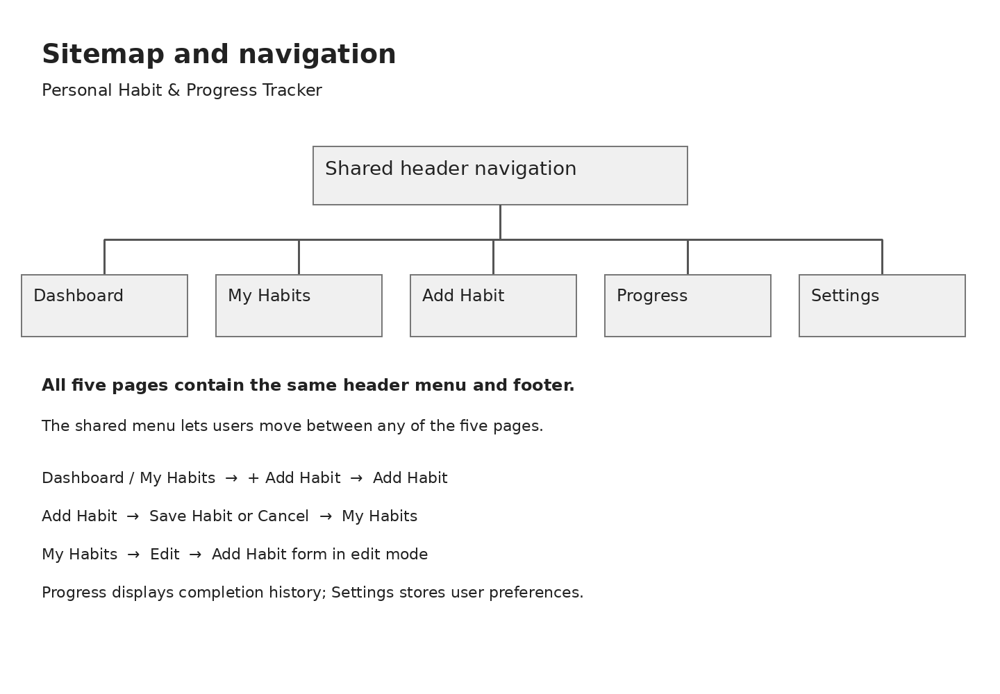
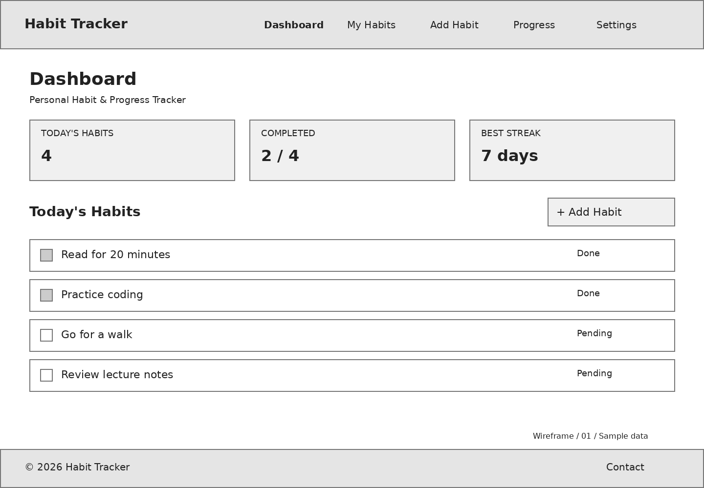
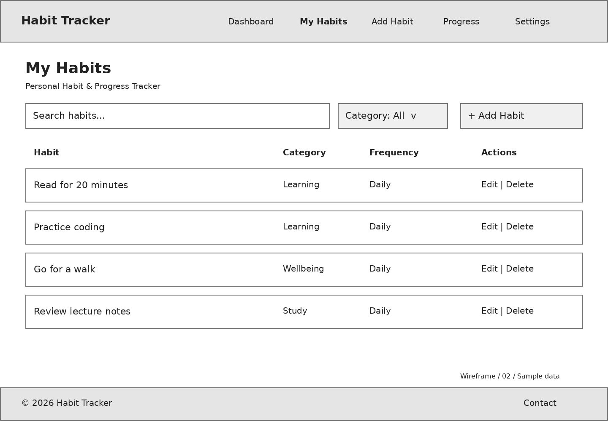
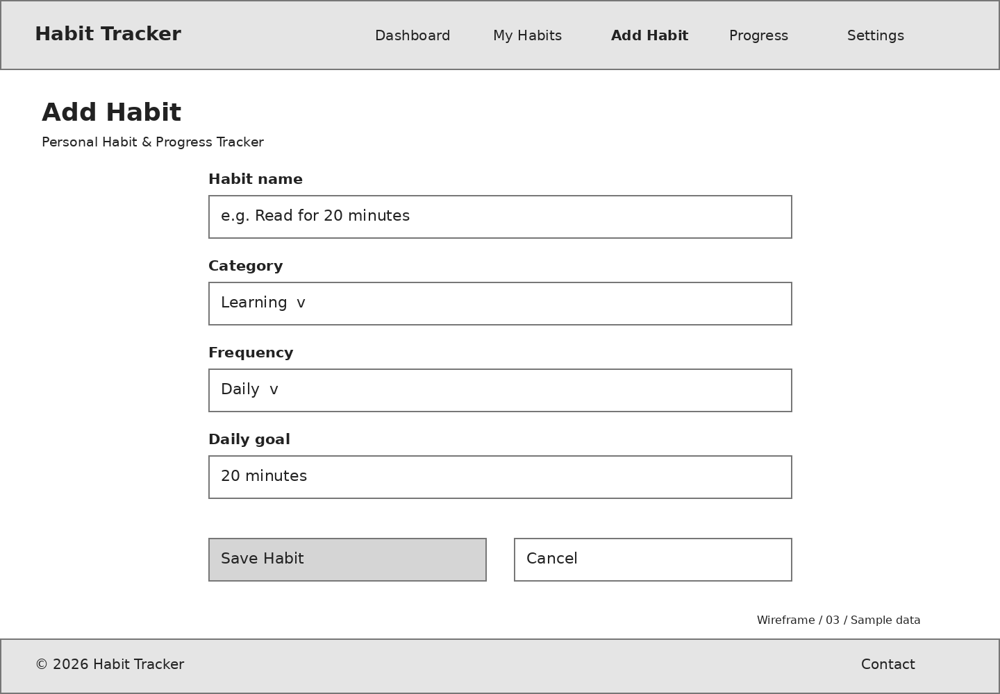
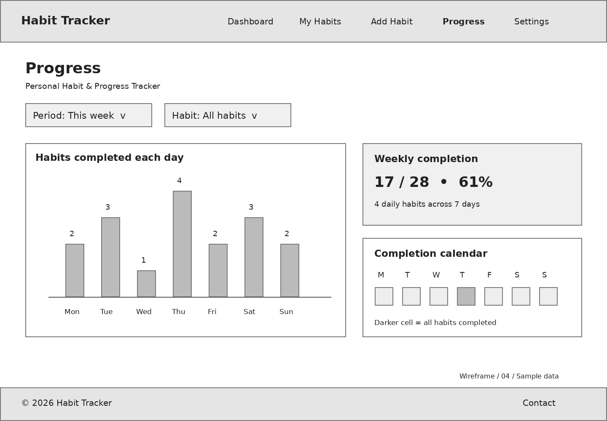
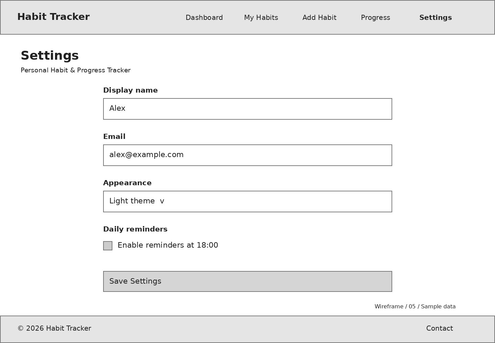

Personal Habit & Progress Tracker
Project Description
Personal Habit & Progress Tracker is a website that helps users organize their habits and track their progress. Its target users are students and people who want to build consistent daily routines. Users will be able to add habits, mark them as completed, and view weekly statistics. The purpose of the website is to make personal planning simple and help users understand their progress over time.
The images below are wireframes for the planned website. They show layouts, not working features.
Sitemap
The shared navigation menu connects all five pages. Saving a new habit returns the user to My Habits.

1. Dashboard
Today's habits, completion status and a short summary.

2. My Habits
A habit list with search, categories and editing options.

3. Add Habit
A form for the habit name, category, frequency and goal.

4. Progress
A weekly chart, completion statistics and a calendar.

5. Settings
Profile information, appearance and reminder settings.
